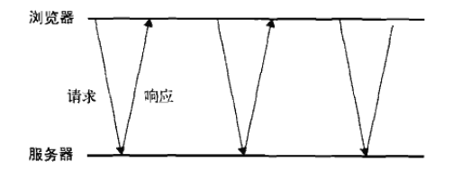
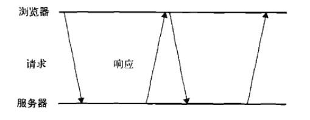

服务器端推送技术
介绍服务器向浏览器推送数据的技术，包括：meta标签刷新页面、Ajax轮询、Comet、WebSocket、SSE
meta标签
在 Web早期，通过配置meta标签让浏览器自动刷新，从而实现服务器端的推送
1 | <META HTTP-RQUIV="Refresh" CONTENT=12> |
优点：使用方式简单，可以在JS禁用情况下使用
缺点：不是实时更新数据，对服务器造成的压力大，带宽浪费多
Ajax轮询
Ajax隔一段时间（通常使用JavaScript的setTimeout函数）就去服务器查询是否有改变，从而进行增量式的更新。这种轮询方式是短轮询。

优点：比起meta刷新页面的方式降低了带宽
缺点：不是实时数据
Comet
Comet方式通俗的说就是一种长连接机制(long lived http)。同样是由Browser端主动发起请求，但是Server端以一种似乎非常慢的响应方式给出回答。这样在这个期间内，服务器端可以使用同一个connection把要更新的数据主动发送给Browser。因此请求可能等待较长的时间，期间没有任何数据返回，但是一旦有了新的数据，它将立即被发送到客户机。有两种实现方式：长轮询、流。
优点：实时性好（消息延时小）；性能好（能支持大量用户）
缺点：长期占用连接，丧失了无状态高并发的特点。
长轮询
长轮询把轮询颠倒了以下。页面发起一个到服务器的请求，然后服务器一直保持连接打开，直到有数据可发送。发送完数据之后，浏览器关闭连接，随机又发起一个到服务器的新请求。这一过程在页面打开期间一直持续不断。

流
流是通过HTTP流实现的。不同与长轮询，它在页面的整个生命周期内只能使用一个HTTP连接。浏览器向服务器发送一个请求，服务器保持连接打开，然后周期性地向浏览器发送数据。
服务器端实现1
2
3
4
5
6
7
8
$i = 0;
while(true){
echo "Number is $i";
flush();
sleep(10);
$i++;
}
浏览器端实现1
2
3
4
5
6
7
8
9
10
11
12
13
14
15
16
17
18
19
20function createStreamingClient(url,progress,finished){
var xhr = new XMLHttpRequest(),
received = 0;
xhr.open("get",url,true);
xhr.onreadystatechange = function(){
var result;
if(xhr.readyState == 3){
//只取得最新数据并调整计数器
result = xhr.responseText.substring(received);
received += result.length;
//用新数据调用progress回调函数
progress(result);
}else if(xhr.readyState == 4){
finished(xhr.responseText);
}
};
xhr.send(null);
return xhr;
}
WebSocket
Web Sockets的目标是在一个单独的持久连接上提供全双工、双向通信。在JavaScript中创建了Web Socket之后。会有一个HTTP请求发送到浏览器以发起连接。在取得服务器响应后，建立的连接会从HTTP升级为Web Socket协议(ws、wss)。
服务器端nodejs实现1
2
3
4
5
6
7
8var WebSocketServer = require('ws').Server,
wss = new WebSocketServer({ port: 8181 });
wss.on('connection', function (ws) {
console.log('client connected');
ws.on('message', function (message) {
console.log(message);
});
});
浏览器端实现1
2
3
4
5
6
7var ws = new WebSocket("ws://localhost:8181");
ws.onopen = function (e) {
console.log('Connection to server opened');
}
function sendMessage() {
ws.send($('#message').val());
}
优点：实现了双向通信，能够实时接收到信息，能够跨域
缺点：需要浏览器支持
SSE
SSE(Server-Sent-Events,服务器发送事件) API 用于创建到服务器的单向连接，服务器通过这个连接可以发送任意数量的数据。
服务器端实现1
2
3
4
5
6
7
8
9
10
11
12
13
14
15
16
17
18
19
20
21
22
23
24var http = require("http");
http.createServer(function (req, res) {
var fileName = "." + req.url;
if (fileName === "./stream") {
res.writeHead(200, {"Content-Type":"text/event-stream",
"Cache-Control":"no-cache",
"Connection":"keep-alive"});
res.write("retry: 10000\n");
res.write("event: connecttime\n");
res.write("data: " + (new Date()) + "\n\n");
res.write("data: " + (new Date()) + "\n\n");
interval = setInterval(function() {
res.write("data: " + (new Date()) + "\n\n");
}, 1000);
req.connection.addListener("close", function () {
clearInterval(interval);
}, false);
}
}).listen(80, "127.0.0.1");
客户端实现1
2
3
4
5
6
7
8
9var es = null;
function startEventSource(url,processOneLine){
if(es) es.close();
es = new EventSouce(url);
es.addEventListener("message",function(e){
processOneLine(e.data);
},false);
es.addEventListener("error",handleError,false);
}
优点：能够即时获取数据，数据传输量小
缺点：只能单向通信，且需要浏览器支持
参考文献
JS高程(第三版)
Web端服务器推送技术原理分析
SSE：服务器发送事件,使用长链接进行通讯